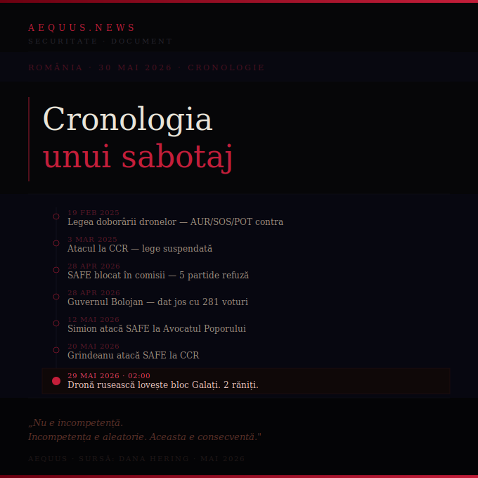

România · Securitate · Document
Cronologia unui sabotaj
15 luni, opt pași, același rezultat: România dezarmată în fața dronelor rusești — și același partid care a blocat apărarea refuză să condamne atacul. Nu avem nevoie de teorii ale conspirației. Avem nevoie doar să punem datele în ordine cronologică.
Aequus · 30 mai 2026 · Sursă: Dana Hering · Document

În noaptea de 29 mai 2026, o dronă rusească Geran-2 a lovit un bloc din Galați. România nu a putut să o intercepteze. Nu a putut pentru că nu are sistemele necesare. Nu are sistemele necesare pentru că au fost blocate metodic, în șapte pași distincți, de-a lungul a 15 luni. Datele sunt publice. Voturile sunt în Monitorul Oficial. Numele sunt cunoscute.
19 februarie 2025
Camera Deputaților adoptă legea privind controlul spațiului aerian — permite doborârea dronelor
Legea trece. Dar 99 de parlamentari votează împotrivă.
AUR
SOS
POT
26 februarie 2025
Senatul aprobă legea doborârii dronelor
AUR invocă „încălcarea principiului suveranității". Parlamentarii AUR părăsesc sala înainte de vot secret — ca să se asigure că niciun coleg nu votează prin absență.
AUR
POT
SOS
3 martie 2025
Atacul la Curtea Constituțională — legea doborârii dronelor, contestată
La o săptămână după adoptare, aceiași actori atacă legea la CCR. Legea e suspendată. România rămâne fără cadru legal pentru interceptarea dronelor în spațiul aerian național.
AUR
POT
SOS
28 aprilie 2026
Comisiile reunite de apărare — cele 15 proiecte SAFE, blocate
Programul SAFE — 16,68 miliarde de euro pentru înzestrare militară, inclusiv protecție antidronă — ajunge la comisii. Nu trece. Cinci partide refuză să voteze.
AUR
SOS
PACE
POT
PSD
28 aprilie 2026 — aceeași zi
Guvernul Bolojan — dat jos cu 281 de voturi
Una dintre temele moțiunii de cenzură: fix programul SAFE de înzestrare militară. Guvernul care promova dotarea antidronă e eliminat în aceeași zi în care comisiile îi blochează proiectele.
AUR
PSD
POT
SOS
PACE
12 mai 2026
AUR atacă SAFE la Avocatul Poporului
George Simion depune sesizare la Avocatul Poporului pentru contestarea programului de înzestrare militară. Al șaselea pas în același lanț.
AUR — Simion
20 mai 2026
PSD atacă SAFE la Curtea Constituțională
Sorin Grindeanu depune contestație la CCR. Programul de înzestrare militară e blocat și pe această cale. România rămâne fără dotare antidronă aprobată legal.
PSD — Grindeanu
29 mai 2026 — ora 02:00
Dronă rusească Geran-2 lovește un bloc din Galați
Doi cetățeni răniți, dintre care un copil de 14 ani. Zeci de persoane evacuate. Un apartament distrus la etajul 10. România nu interceptează drona. Nu are cu ce. Premierul Bolojan, demis cu 22 de zile înainte: „Răspunsul apărării românești a fost limitat de nivelul dotării."
29 mai 2026 — după ancheta la fața locului
AUR refuză să condamne Rusia — după ce autoritățile stabiliseră că drona e rusească
Comunicatul AUR: „AUR este un partid responsabil și așteaptă mai întâi cercetarea la fața locului și raportul de expertiză mai înainte de a condamna agresorul,
indiferent dacă este Rusia sau alt stat." Declarația apare după ce autoritățile române stabiliseră deja că drona e rusească. Același partid care a votat împotriva legii doborârii dronelor, a atacat-o la CCR și a dat jos guvernul Bolojan refuză să numească agresorul după ce ancheta s-a încheiat.
AUR
Opt pași în 15 luni. Aceiași actori în fiecare pas. Același rezultat final: o țară membră NATO, cu F-16 și sisteme radar, incapabilă să intercepteze o dronă de joasă altitudine deasupra unui oraș de pe malul Dunării — și cu un partid parlamentar care refuză să numească agresorul după ce ancheta l-a identificat.
Nu e incompetență. Incompetența e aleatorie. Aceasta e consecventă, documentată și direcționată spre un singur obiectiv: menținerea României neprotejate în fața unui tip de amenințare care era deja vizibilă din 2022.
Cercul se închide complet. Același partid care a blocat apărarea refuză să condamne atacul. Nu e coincidență. E consecvență.
Faptele sunt în Monitorul Oficial. Voturile sunt publice. Comunicatele sunt arhivate. Numele sunt cunoscute. Rămâne o singură întrebare: când va trage cineva concluziile care se impun?
Sursă
Cronologie documentată de Dana Hering pe baza datelor publice din Monitorul Oficial, procesele-verbale ale Parlamentului și comunicatele oficiale ale instituțiilor implicate. Aequus a verificat datele independente față de surse deschise.